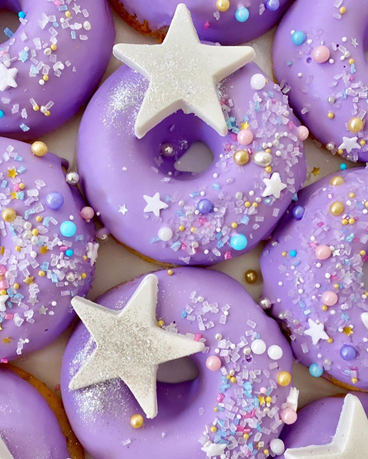
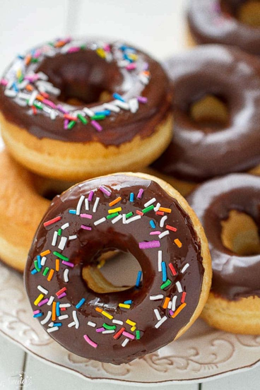
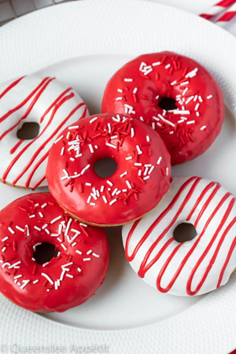
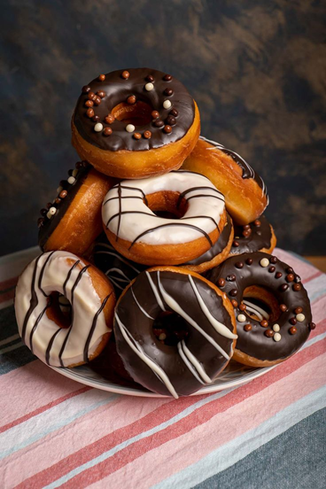
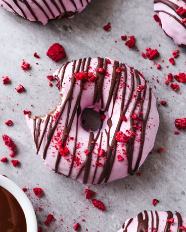
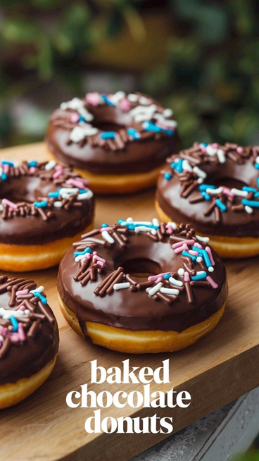
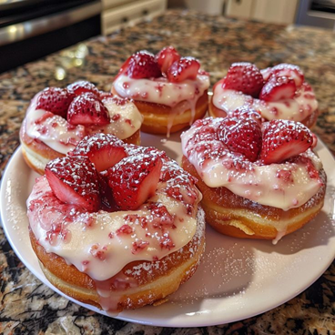
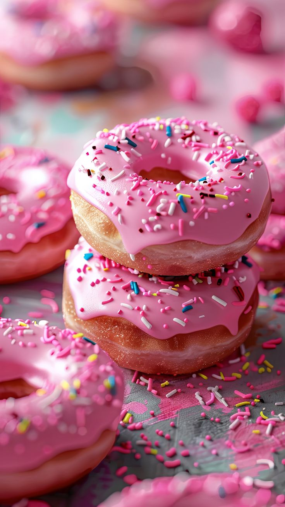

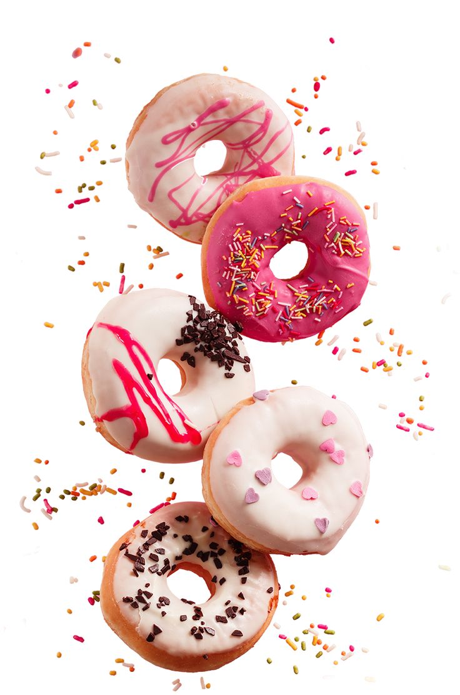
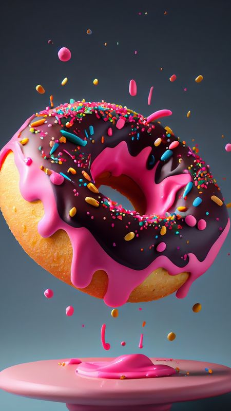
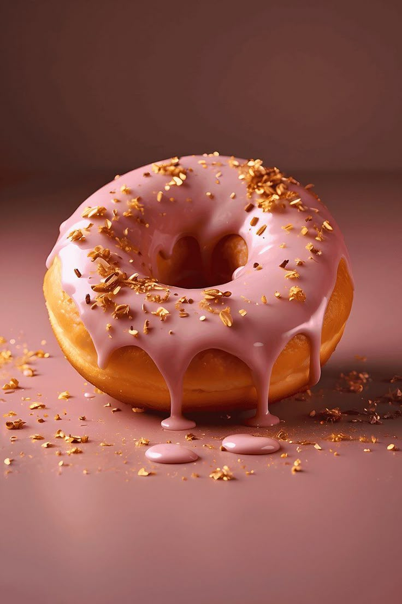
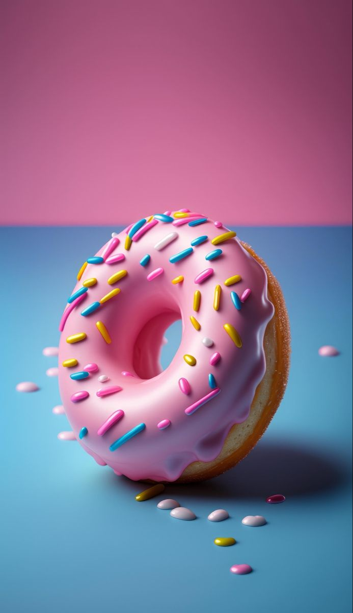
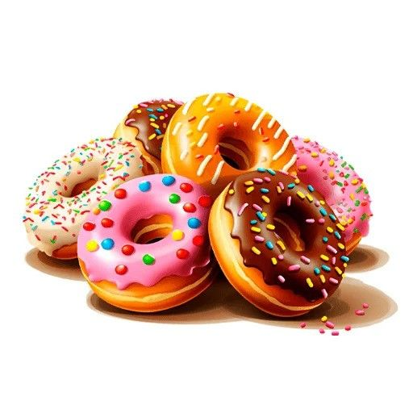
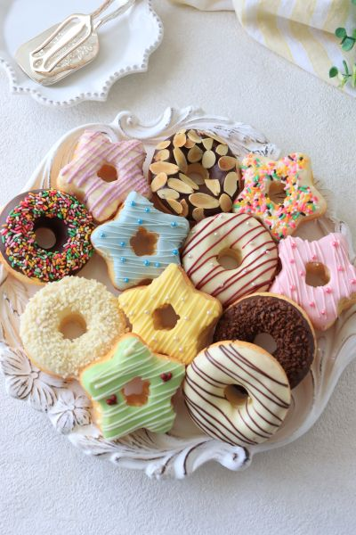
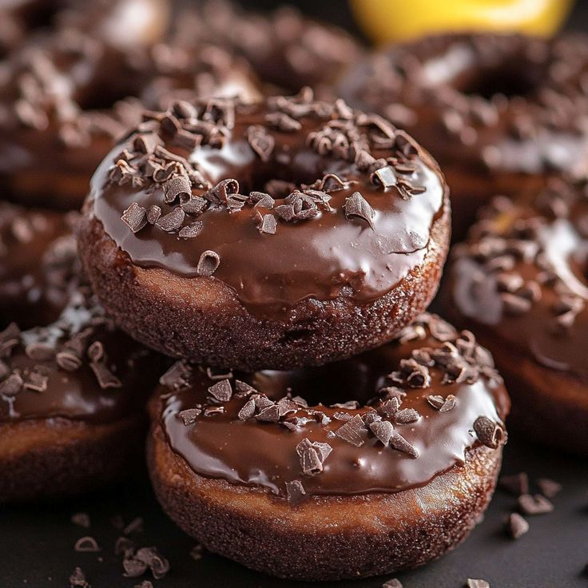
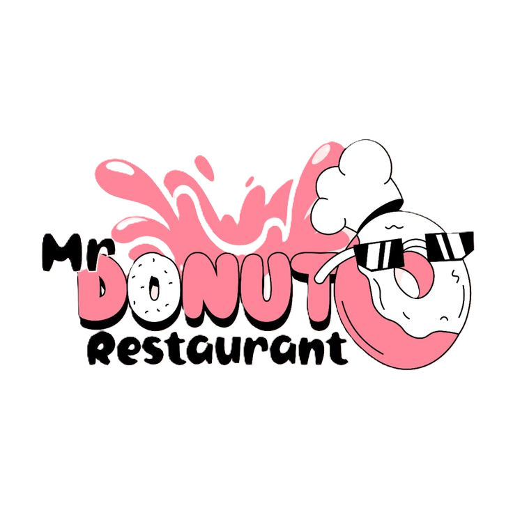
We believe that simple, natural food tastes best. Our ice cream is lovingly handmade in small batches in the heart, using only simple, natural, and fresh local ingredients of adventure and discovery.














